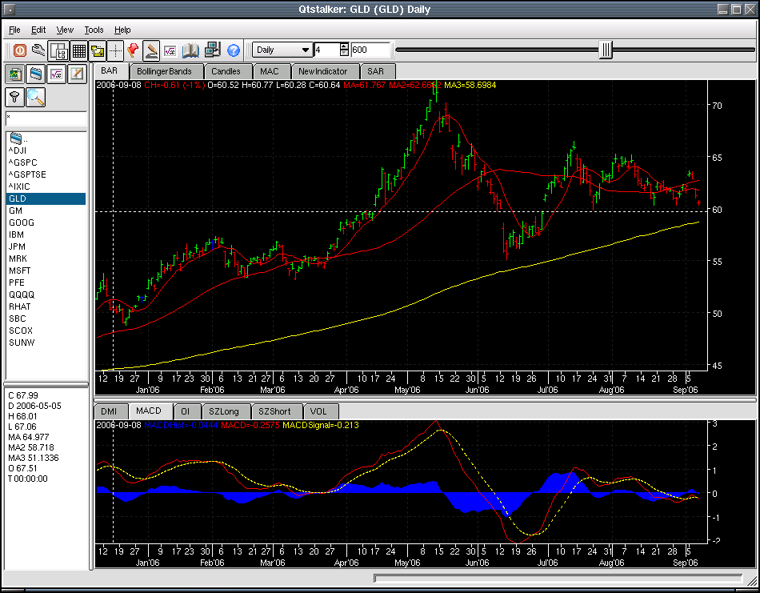

Main Screen
The figure below illustrates the what a typical Qtstalker app looks like. The basic parts of the app going from top to bottom are:
- The title bar displays the current chart loaded.
- The menu bar.
- The tool bar area consists of access to the most used charting functions like chart types, bar spacing, grid, bars etc.
- The chart, groups, indicator, portfolio and backtesting and scanner panel buttons. These buttons give you access to assorted functions that apply to each.
- Up to 3 rows of tabbed indicators can be created.
Here is a shot of the gold ETF.
